Sportsbook Cross Sell
Improving the customer experience with limited developer resource.
Introduced a data-led approach to our sportsbook product, where I benchmarked the existing experience and identified a significant drop-off between the homepage and sportsbook page. Analysis showed awareness as a key factor for customers not betting with the Tote sportsbook. There was no back-end resource available for the initiative, so I used existing underused functionality, which was repurposed and displayed on the homepage rather than hidden on a bet receipt. The first A/B test failed, however we found issues with the audience segmentation, so despite stakeholder pressure to pull the initiative, we reran the A/B test which found the component to be successful.
A/B Test 2
89.2%
Widget Conversion rate
+5.25%
No. bets placed
+4.20%
Avg. stake size
A/B Test 1
88.6%
Widget Conversion rate
-3.9%
No. bets placed
-8.40%
Avg. stake size
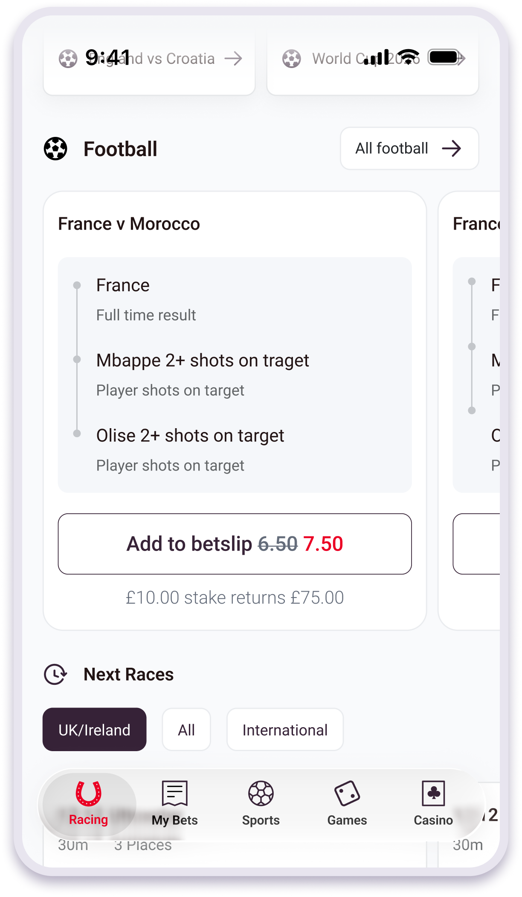
The Problem
- Sportsbook average spend per user is below target.
- Customers can’t find our sportsbook markets.
- There is no back-end resource and our current sportsbook provider is a hard-coded third party with limited integration functionality.
Research
Benchmarking
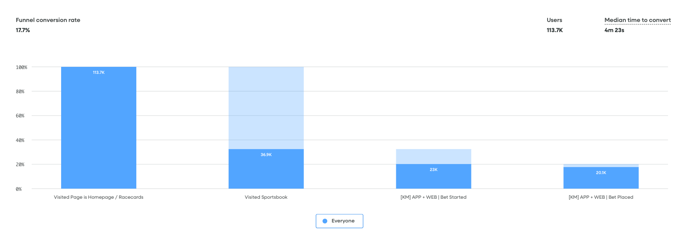
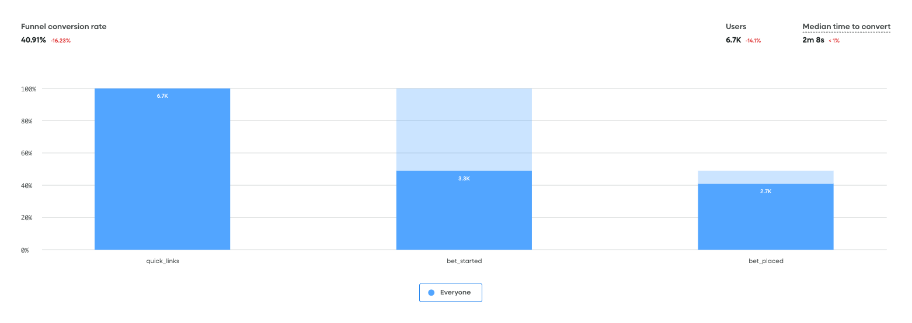
Insight
Customers convert well when they find the market they want to bet on; the biggest drop off is from customers trying to reach those markets. When customers are signposted to key markets, they convert better than customers finding the markets themselves.
Talking to Stakeholders & Customers
I surveyed our sportsbook customers and received 812 responses. The stakeholders were originally hesitant to embrace the metric benchmarking I was introducing, as previously they relied on their experience to make decisions with our third-party integration.
Stakeholder Feedback
“The betslip is not up to standards, that is where we should look.”
“Why should I care about conversions when I know where the problems are?”
“Could we be in charge of the content so we can surface relevant markets based on time?”
“How can we get our partner to finish tagging the entire sportsbook customer journey?”
Customer Feedback
3.74/5
Navigation satisfaction
2.90/5
Speed to find market
-7
NPS
44.5%
Have not placed an acca
“I did not know I could bet on bet builders with the Tote”
“It can be hard to find the match I want to bet on”
“I find it easier to use competitors for my bet builders”
The majority of customers are not betting on high margin products that are popular on competitor sites.
Hypothesis
By surfacing our sportsbook markets on the homepage, there will be an increase in sportsbook bets placed. This will result in an increased average spend per user.
Exploration
Existing Journey
The existing journey was a cross sell feature that existed on the bet receipt. As it is not signposted and behind a paywall, it is largely forgotten about across the business. As there was no back-end resource, it was necessary to find existing functionality to help solve the customer problem rather than building something new.
-
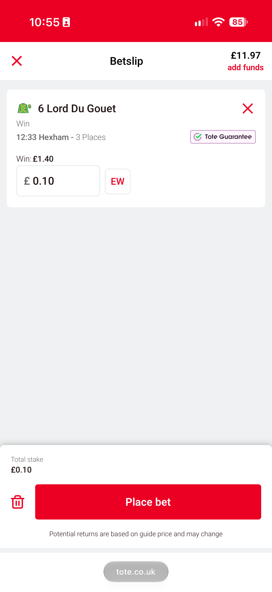
Cross-sell is hidden behind a pay barrier as it is only visible once a customer has placed a racing bet.
-
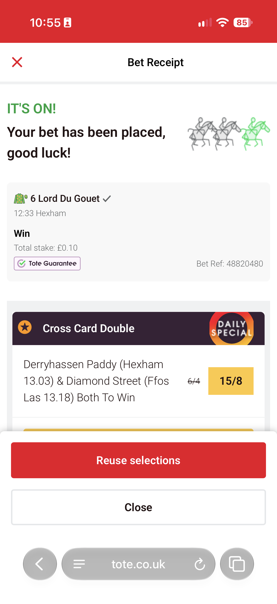
Customer must scroll down to view the cross-sell CTA.
-
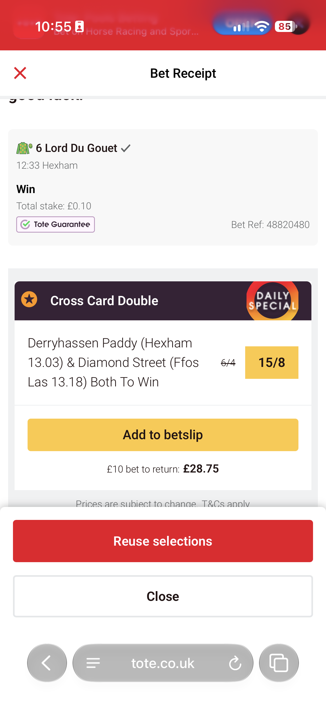
When a customer presses the CTA, there are no interaction states and customers remain on the receipt.
-
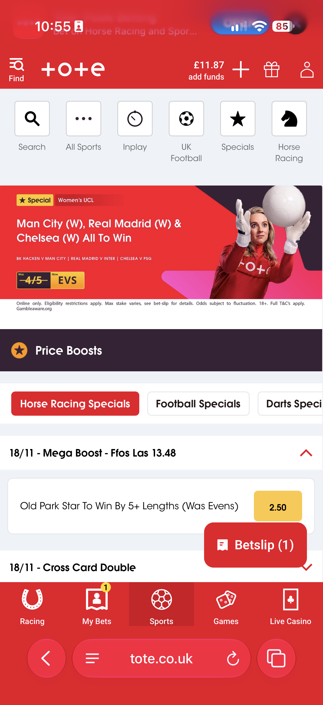
A customer closes the betslip to see the sportsbook homepage with an active betslip button.
-
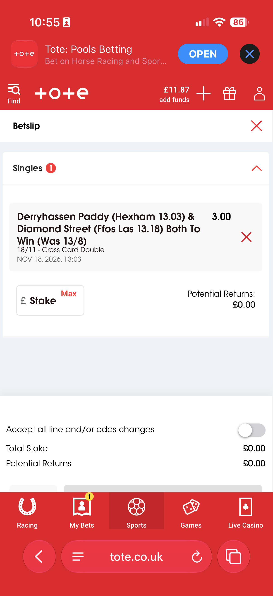
Customer presses betslip to see it pre-filled with the cross-sell bet.
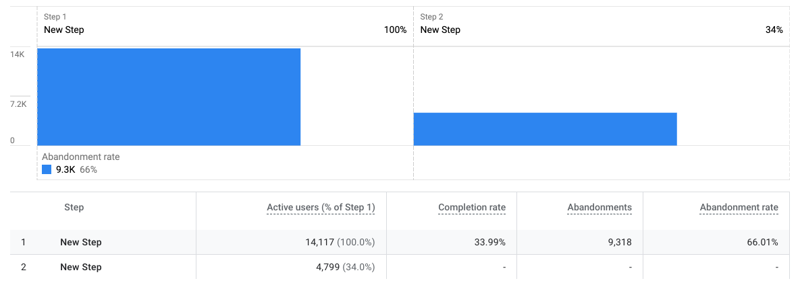
My Design Process
Stage 1
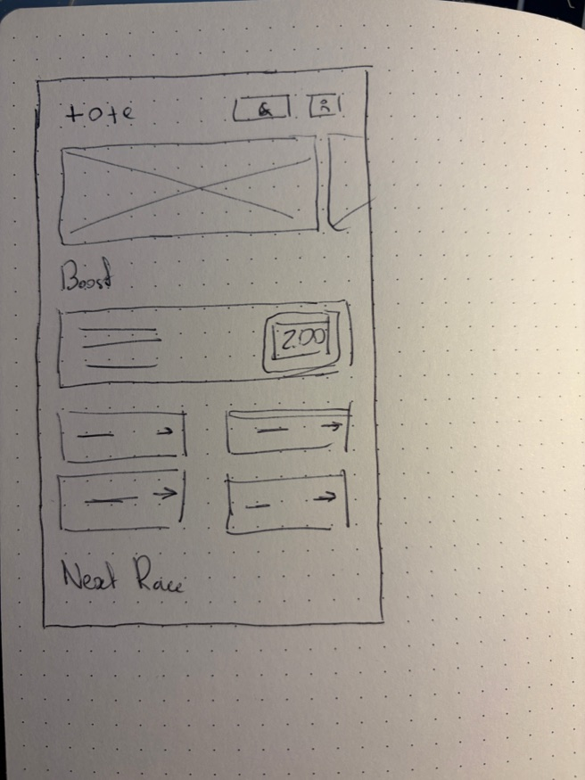
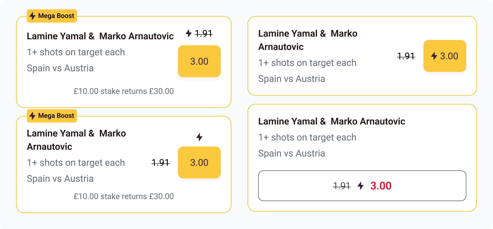
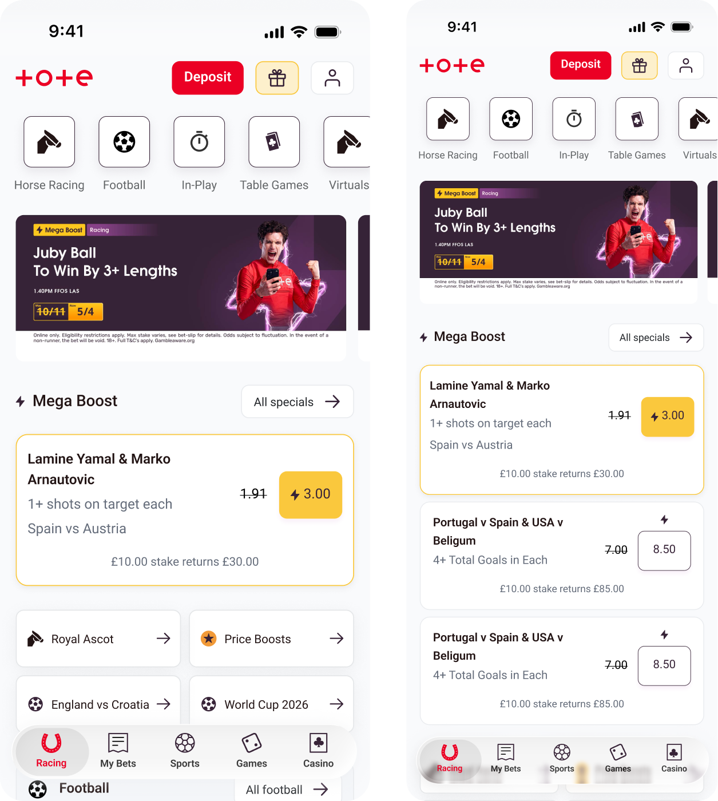
- Explored whether to display a singular boost or by having several. The issue with having several listed was that it would be pushing content further beneath the scroll.
- Stakeholders suggested adding £10.00 stake returns X amount, as based on their experience it increases the customer’s stake amount.
- Biggest feedback was to concentrate on cross selling bet builders rather than the mega boost, as there was significant investment in the former whereas the latter is a loss-leader.
Stage 2
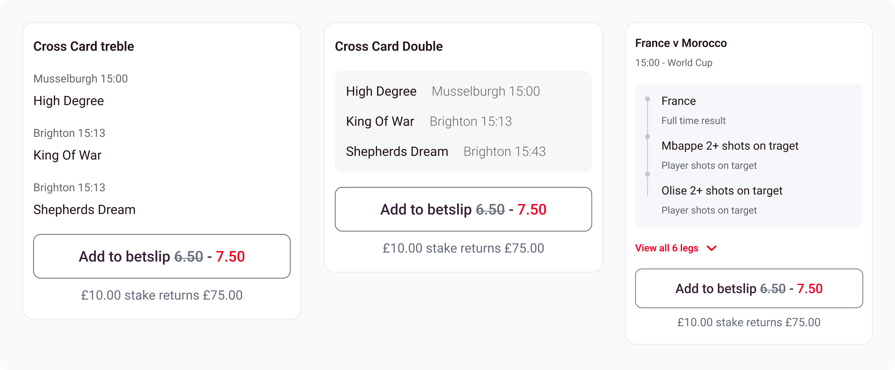
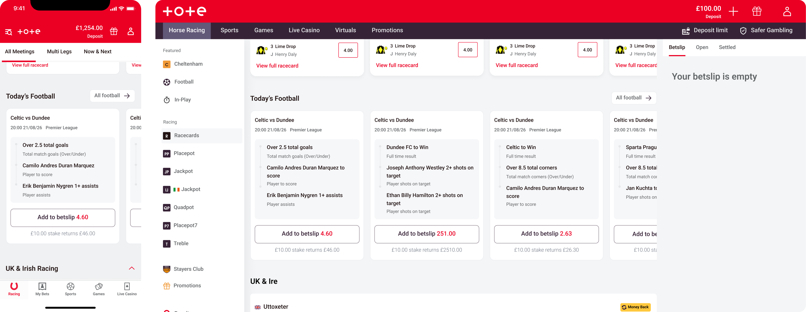
- Pivoted to a card with a horizontal scroll, which are commonplace in the industry.
- Explored multiple formats and landed on one that I felt was most scalable and can be used for multiple bet types.
- Changed from the yellow cta to our secondary buttons, as our yellow brand guidelines says it should only be applied when there is a promotion or a special offer to our customers.
- Discussion with our operations teams meant that bet builders were not technologically available. We pivoted and gave full control to the ops team whereby they can customise the title and build their own bets rather than using the third party feed.
Validation
Conducted an A/B test where our sportsbook customers (defined by placing a bet on the sportsbook within the past month) were split 50:50, with group A seeing the widget once they had logged in. In total, 14,000 customers were involved in the experiment. The key success metrics were:
- No. of sportsbook bets placed.
- Avg. stake size.
A/B Test Results
Test 1
88.6%
Widget Conversion rate
-3.9%
No. of bets placed
-8.40%
Avg. stake size
-
Audience Segmentation
- Exclude our high-staking customers as they can often skew the data.
- Ensure we are targeting sportsbook customers within the component segment.
-
External Factors
- Sportsbook promotions were reduced to our most active of customers, meaning casual users were less incentivised to bet more with us.
-
Stakeholder Management
- Product manager suggested pulling the component, whereas the stakeholders wanted to push to 100%. I suggested rerunning the test, correcting the segmentation to reduce the impact of confounding variables
Test 2
89.2%
Widget Conversion rate
+5.25%
No. of bets placed
+4.20%
Avg. stake size
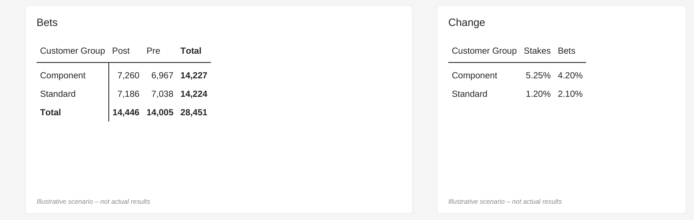
Widget Conversion Rate
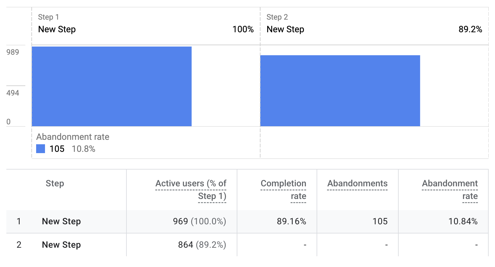
Reflections and Learnings
Working with limited resource
All of the Tote’s backend developers were on a priority initiative; however, another team had become blocked and wanted a quick win.
Exploring all the customer journeys uncovered functionality that was largely forgotten about. I proposed utilising this functionality, using prototypes to get buy-in with stakeholders.
Data-led approach
Previous designers had struggled to build a relationship with sportsbook stakeholders as all decisions were based upon experience and assumptions.
Despite stakeholders not being receptive to the conversion benchmarking, I worked with BI teams to build a more comprehensive data report to help convince them. Relying on data and insight helped me build relationships with stakeholders that previous designers could not.